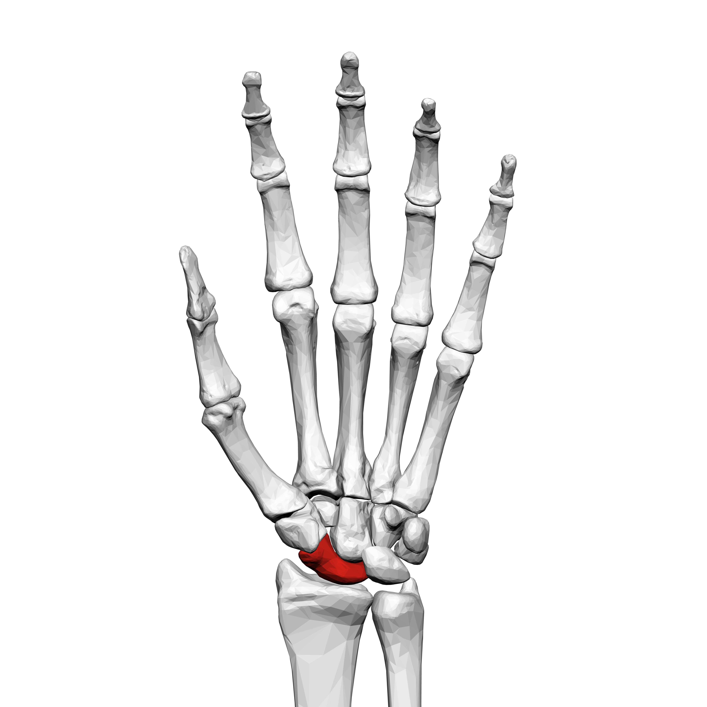
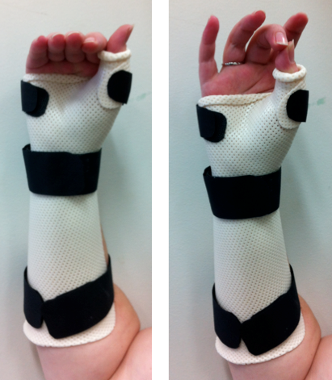
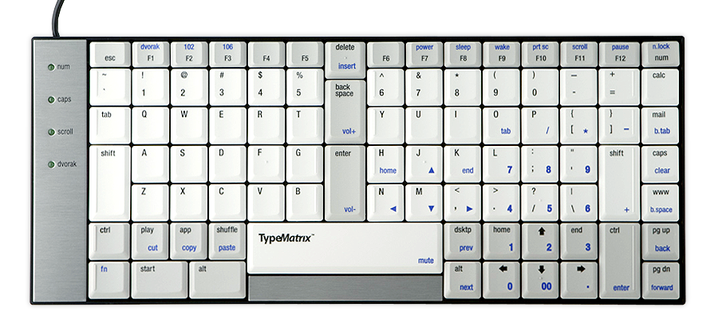
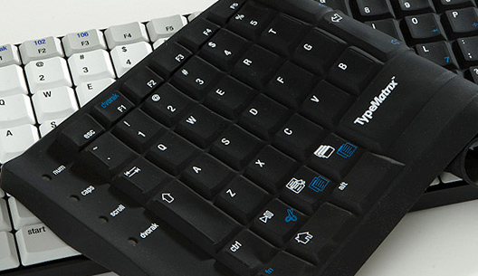
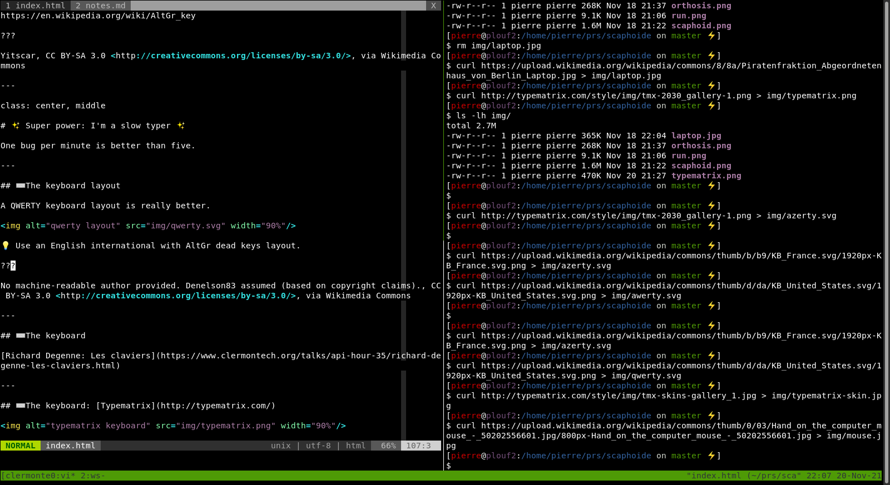
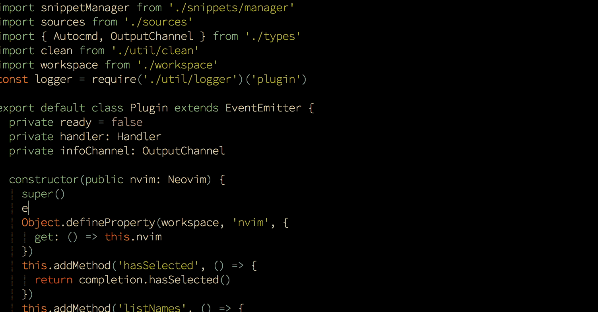

class: center, middle # Scaphoid and programming What?! --- ## [The scaphoid bone](https://en.wikipedia.org/wiki/Scaphoid_bone)  ??? BodyParts3D is made by DBCLS., CC BY-SA 2.1 JP <https://creativecommons.org/licenses/by-sa/2.1/jp/deed.en>, via Wikimedia Commons --- ## An orthosis during ~3 months 💝  ??? Lillie.t, CC BY-SA 3.0 <https://creativecommons.org/licenses/by-sa/3.0>, via Wikimedia Commons --- class: center, middle ## How do I work now? 🤔 --- ## Starting point * 💻 Laptop but with keyboard/mouse and external monitor * ⌨️ French AZERTY keyboard layout * 🐧 Debian Linux * 📝 PHP Storm IDE --- ## ⚠️ Don't do that! ??? Tobias M. Eckrich, CC BY 3.0 <https://creativecommons.org/licenses/by/3.0>, via Wikimedia Commons --- ## ⌨️ The keyboard layout Using an AZERTY keyboard layout is a pain for coding. <img alt="azerty layout" src="img/azerty.svg" width="90%"/> 💡 Did you know *Alt Gr* stands for *Alt Graph*? https://en.wikipedia.org/wiki/AltGr_key ??? Yitscar, CC BY-SA 3.0 <http://creativecommons.org/licenses/by-sa/3.0/>, via Wikimedia Commons --- class: center, middle # ✨ Super power: I'm a slow typer ✨ One bug per minute is better than five. --- ## ⌨️ The keyboard layout A QWERTY keyboard layout is really better. <img alt="qwerty layout" src="img/qwerty.svg" width="90%"/> 💡 Use an English international with AltGr dead keys layout. ??? No machine-readable author provided. Denelson83 assumed (based on copyright claims)., CC BY-SA 3.0 <http://creativecommons.org/licenses/by-sa/3.0/>, via Wikimedia Commons --- ## ⌨️ The keyboard 🎞️ [Richard Degenne: Les claviers](https://www.clermontech.org/talks/api-hour-35/richard-degenne-les-claviers.html), Clermont'ech APIHour#35 --- ## ⌨️ The keyboard: [Typematrix](http://typematrix.com/)   ??? [Typematrix.com](http://typematrix.com/) --- ## 🖱️ The mouse issue Moving from the keyboard to the mouse is slow. ??? Nenad Stojkovic, CC BY 2.0 <https://creativecommons.org/licenses/by/2.0>, via Wikimedia Commons --- class: center, middle # ✨ Super power: I'm a slow learner ✨ I want to learn only for long term usage. --- ## Vim&Tmux: the magic combo * Exist forever * The mouse is now almost useless  💡 A must read: [Vim pour les humains](https://vimebook.com/fr): disable the arrow keys in vim. --- class: center, middle ## Vim&Tmux: that could hurt 🤕 Vim is not an IDE. --- ## Nvim and LSP: a breeze * [Nvim](https://neovim.io/) Vi improved² * [Language Server Protocol](https://microsoft.github.io/language-server-protocol/) thank you Microsoft 💖 * Awesome extensions: [vim-plug](https://github.com/junegunn/vim-plug), [fzf.vim](https://github.com/junegunn/fzf.vim), [coc.nvim](https://github.com/neoclide/coc.nvim) *Vim is now as powerful and confortable as an IDE.*  ??? [coc.nvim](https://github.com/neoclide/coc.nvim) --- class: center, middle # Conclusion 🔥 Don't be afraid to get out of your comfort zone. 💪 A weakness could be a strength. --- class: bottom, left # Thank you 🙏 Pierre Tachoire<br> pierre@tch.re<br> [krichprollsch](https://twitter.com/krichprollsch)